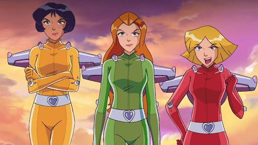

About Sam
Samantha is a main character in the "Totally Spies!" series. She wears a green Catsuit when she's on a spy mission.
Sam and her friends
Sam's Characteristics
- She's smart and loyal
- She has great leadership skills
- She has red hair and emerald green eyes
Sam's Friends
Her best friend is Alex. Clover and Sam sometimes have disagreements that must be mediated by Alex. Check the links below to see more information.